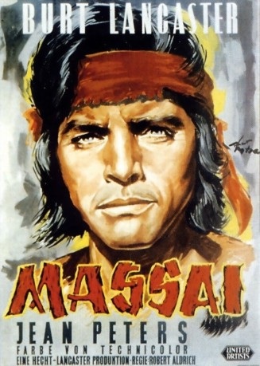

#3273 Apache
Alternativ: Massai - der große Apache
 
 IMDB-Wertung: 6.4 / 10
IMDB-Wertung: 6.4 / 10  Metascore: 0
Metascore: 0 
Der Apache Massai (Burt Lancaster) flieht aus einem Gefangenentransport. Die Freiheit währt nicht lange: In seinem Dorf wird Massai verraten und erneut gefangen genommen. Er kann aber wieder entkommen. Von seinem Versteck in den Bergen aus startet er einen aussichtslosen Ein-Mann-Krieg gegen die Weißen. - Anspruchsvoller Edelwestern mit Hollywood-Ikone Burt Lancaster als Rothaut.
Jahr: 1954
Dauer: 83 Minuten
FSK: 12
Land: USA Studio: A United Artists ReleaseTonspuren: DD2.0 - ,
Untertitel:
Auflösung: 1080p (1920x1080) Größe: 6727 MB
Genre: Western
Regisseur: Robert Aldrich
Drehbuch: James R. Webb, Paul Wellman
Soundtrack: David Raksin
Darsteller:
Datei: X:\HD-Western-1900-1959\Apache (1954, FSK12, 1920x1080).mkv seit 25.02.2016
Festplatte: HD Eastern+Western
 Es gibt insgesamt 98 Filme in der Gruppe 'HD-Western-1900-1959'
Es gibt insgesamt 98 Filme in der Gruppe 'HD-Western-1900-1959'